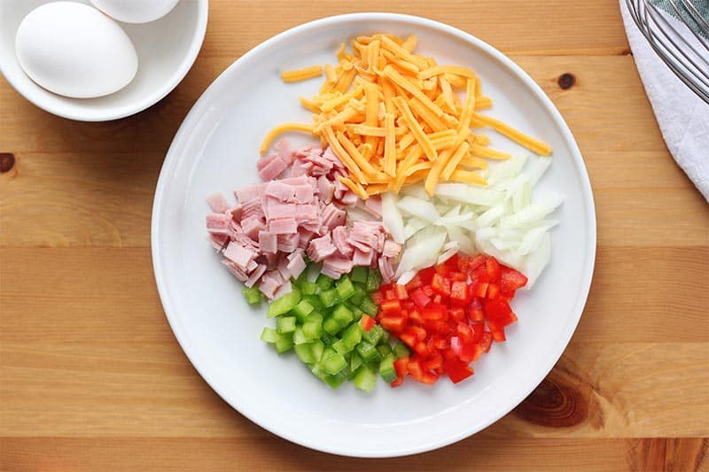

Omelettes are an incredibly personalizable and delicious dish. They can be
stuffed with any ingredients you wish, to fit many different palettes. There
are several different omelette variations to explore. This recipe will walk
you through the steps to cook a quick and easy american-style omelette.
ingredients
equipment
1 cup mixed vegetables and/or meat.
8" nonstick pan
2 large eggs
spatula
1/2 tablespoon butter
whisk
any cheese
sizable bowl
Instructions
Prepare and dice one cup of your favorite vegetables and/or cooked meat
(or other fillings too!), then set your filling aside.

Crack your eggs into a bowl and whisk until the whites and yolks are fully combined.
Whisk in a pinch salt and pepper.
Melt butter over the pan before pouring in the eggs. Swirl the egg mixture over the
pan to form an even layer.
On medium-low heat, cover the pan with a lid until the edges of the eggs start to set.
Then, gently push the edges with a spatula and swirl the pan again so the raw egg in the middle reaches the edges to cook.
After about 5 minutes or until the omelette is almost completely set, flip it over and
cover the omelette with cheese to taste. Place your prepared filling on one half of the surface.
Fold the omelette down the middle with a spatula, and the dish is finished. Bon appetit!